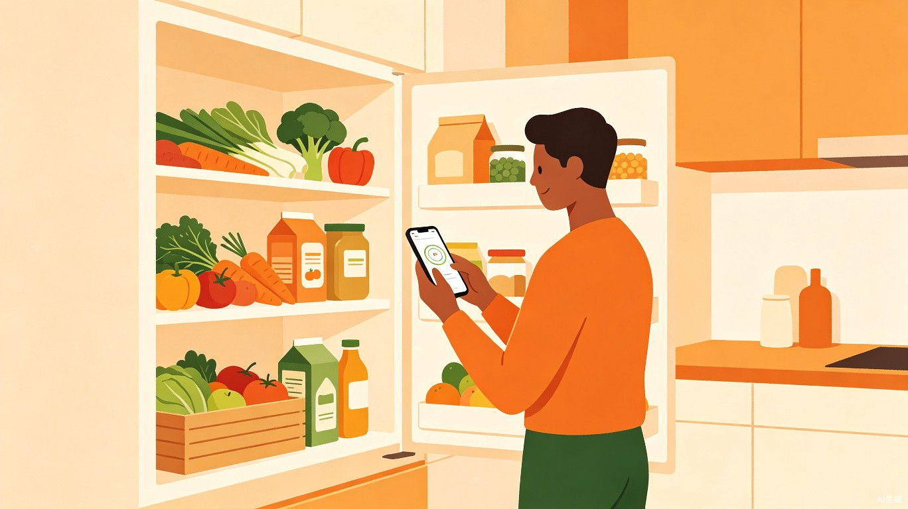
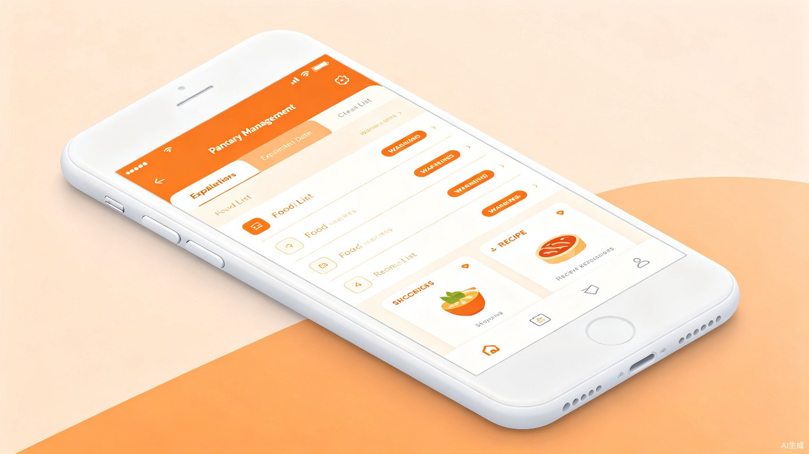
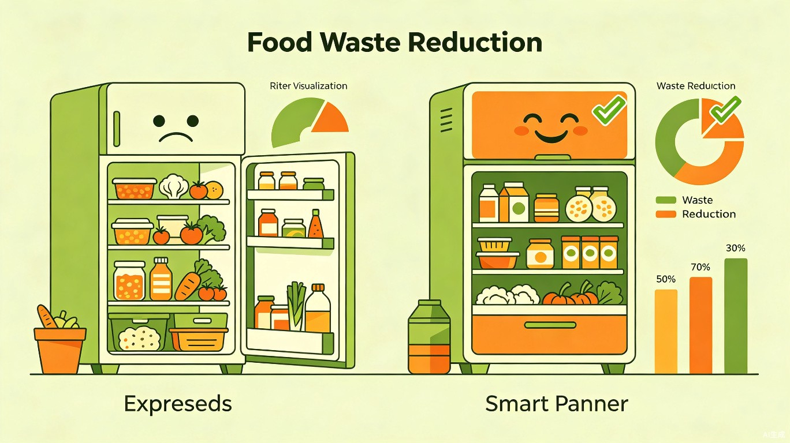

1 创意名称与介绍
想解决什么问题？
每个家庭冰箱里都"藏"着被遗忘的食材——买回来的蔬菜塞进冰箱深处，等想起来时已经变质；囤货太多记不清保质期，扔掉时才发现还有一半没吃完。据联合国粮农组织统计，全球每年约 三分之一的食物被浪费，而家庭消费环节是浪费的"重灾区"。我们希望用技术手段，帮助每个家庭轻松管理冰箱里的食材，减少不必要的浪费。
为什么会想到做这个？
灵感来源于日常生活中反复出现的场景：打开冰箱发现上周买的酸奶已经过期、想做菜却不知道冰箱里到底有什么。现有的一些记账类或购物清单类应用只能记录"买了什么"，却无法追踪"还剩什么、还能放多久"。随着手机 AI 视觉能力的成熟，我们看到了一个绝佳的机会——让手机"看一眼"冰箱就知道里面有什么，自动管理食材库存和保质期。
大概是什么产品？
智鲜管家 是一款 移动端 App，用户只需用手机摄像头对冰箱内部拍照，AI 即可自动识别食材种类、数量和大致存放时间，建立"冰箱库存清单"。App 会智能提醒即将过期的食材，并根据现有库存推荐菜谱，还能一键生成补货购物清单。
- AI 拍照识别：打开冰箱拍一张照，自动识别并记录食材种类与数量
- 保质期追踪：智能计算食材新鲜度，分级提醒（新鲜 / 即将过期 / 已过期）
- 智能菜谱推荐：根据冰箱现有食材，推荐"清库存"创意菜谱
- 一键购物清单：根据常用食材消耗习惯，自动生成补货清单
- 家庭共享：多成员共享同一冰箱库存，避免重复购买
- 浪费统计：月度报告展示浪费减少情况，激励持续使用
2 目标用户及痛点
城市年轻家庭与独居白领（22-40岁）
注重生活品质、愿意尝试新工具来提升效率，但日常忙碌，经常忘记冰箱里存了什么。有一定消费能力，对减少浪费有环保意识。
典型使用场景
采购归来
回家后将食材放入冰箱，拍一张照自动入库
日常查看
做菜前打开App，快速查看冰箱库存和新鲜度
过期提醒
收到推送通知，某食材明天到期，优先食用
智能推荐
根据库存推荐菜谱，一键补货常用食材
当前痛点分析
忘记保质期
冰箱深处食材看不见、想不起，等发现时已经过期变质，只能整袋扔掉
重复购买
不记得家里还剩什么，超市里又买了一模一样的调料或食材，越囤越多
不会"清库存"
想用掉快过期的食材但不知道做什么菜，最终眼睁睁看着它坏掉

3 价值与意义
🍮 商业价值
食材管理是高频刚需场景，App 可通过"推荐菜谱 + 一键购物"连接生鲜电商平台（如盒马、叮咚买菜），通过导流和佣金实现商业化。同时可拓展品牌合作，如为食品品牌提供精准的"补货提醒"广告位。
🌿 社会价值
直接减少家庭食物浪费，响应"光盘行动"与联合国可持续发展目标（SDG 12.3）。每个家庭每月减少 20% 食材浪费，全量用户累计可减少数百吨食物浪费，兼具环保效益与社会影响力。

4 技术方案概览
flowchart TD
A[用户拍照] --> B[AI 视觉识别]
B --> C[食材分类与数量检测]
C --> D[库存数据库更新]
D --> E{新鲜度评估引擎}
E -->|新鲜| F[正常展示]
E -->|即将过期| G[推送提醒 + 菜谱推荐]
E -->|已过期| H[标记处理建议]
G --> I[用户烹饪/处理]
I --> J[库存自动扣减]
F --> K[定期补货清单生成]
D --> K
K --> L[一键下单 - 合作电商平台]
核心技术创新点：利用端侧 AI 模型实现离线食材识别（保护隐私），结合云端大模型进行菜谱智能推荐。采用轻量级目标检测模型（如 YOLOv8-nano）适配手机端实时推理，识别准确率目标达到 90% 以上，覆盖常见 200+ 食材品类。
5 产品发展路线
MVP 阶段（1-3个月）：核心拍照识别 + 库存管理 + 过期提醒，覆盖 iOS/Android 双端。 成长阶段（3-6个月）：接入菜谱推荐引擎、购物清单生成、家庭共享功能。 成熟阶段（6-12个月）：对接生鲜电商平台、智能补货订阅、品牌合作、浪费统计月报。